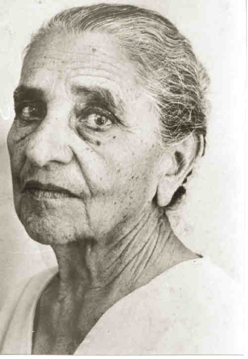
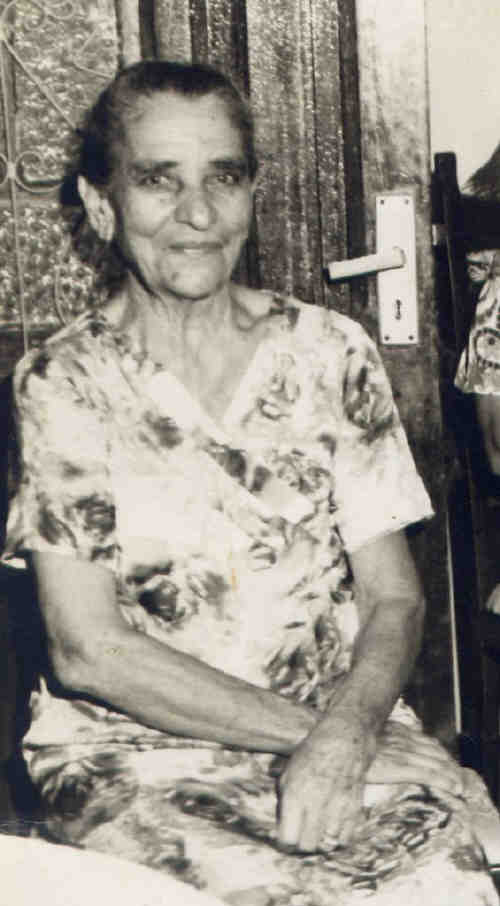
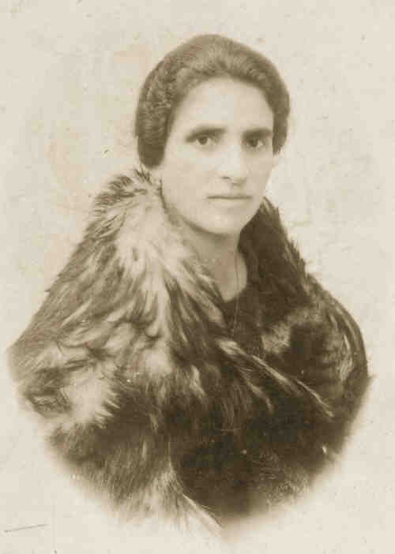
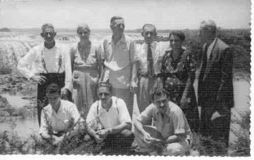
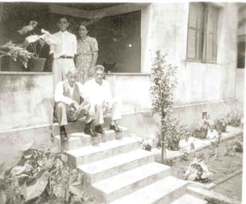
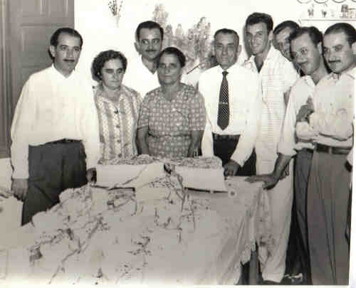
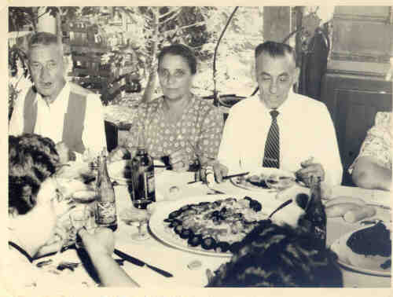
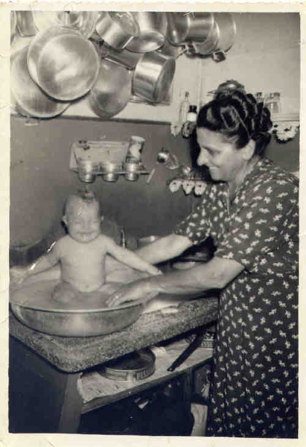
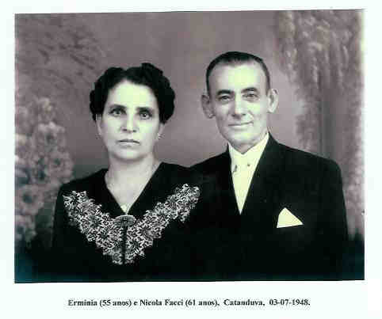

Ermínia Petrella
Nasceu em 19-03-1893 na Comune di Pratola Peligna, Provincia di L'Aquila, Abruzzo - Itália., e faleceu em 04-08- 1974 em Catanduva - SP.
 • fotos: Erminia.  • fotos: vó erminia.  • fotos: Erminia 1. 
(Clique na Foto para vê-la no Tamanho Original)")
• fotos: Ermínia - Nicola e filhos.  • fotos: ercole_luiza_victório_nicola_erminia_,nunzio, em baixo: ultério_aristides_faccinho. Foto tirada na Cachoeira de Marimbondo, no Rio Grande, em Icem, antes de virar barragem.  • fotos: Nicola_Erminia - sentados Nunzio_Ercole. Esta casa na rua Sergipe era a residência de Erminia e Nicola Facci.  • fotos: BODAS DE OURO HERMINIA E NICOLA. Arnaldo_Julia_Orlando_Erminia_Nicola_Mair_Ultério_Faccinho_Italo  • fotos: nunzio erminia e nicola -na comemoração das bodas de ouro erminia_nicola.  • fotos: vó erminia dando banho na herminia lúcia - outubro 1950.  • fotos: Cópia de Petrellafl135_Erminia_Nicola Facci. Ermínia casad[:o::a] Nicola Facci, filho de Giovanni Faccia e Angela Maria Giordano, em 13 Fev 1909 em Neca Junqueira - Sertãozinho. (Nicola Facci nasceu em em 20 Abr 1887 em Comune Di Caramanico, Provincia Di Pescara, Abruzzo, Itália e faleceu em 2 Jan 1966.) |
 Notas Gerais:
Notas Gerais: